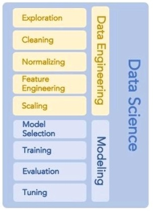

Arbres sur données pharmacologiques
2021-11-16
Chapitre 1 1 - Introduction au projet
1.1 Mise en contexte
L’intelligence artificielle a pour but de rendre une machine capable d’effectuer des tâches a priori réservées aux êtres humains et aux animaux : percevoir, raisonner et agir. Il est possible de l’appréhender de deux manières.
L’approche logique
L’intelligence artificielle classique, telle que développée depuis les années 1950, se construit sur des principes logiques et des systèmes experts. Ces outils reproduisent le raisonnement d’humains experts dans un domaine.
Pour comprendre son fonctionnement, prenez l’exemple d’un médecin qui pose un diagnostic. L’idée est :
d’observer les modalités de ses prises de décision. Par exemple, “SI j’observe ceci ET cela, ALORS je conclus que…” ;
de reproduire ce cheminement de pensée dans un arbre décisionnel ;
de coder ces règles avec des connecteurs logiques.
Vous obtenez alors une machine capable de tirer toute seule des conclusions, à partir des informations que vous lui donnez.
Ce système fonctionne plutôt bien, mais il suppose que la machine ait :
une bonne mémoire pour stocker toutes les règles codées ;
une grande puissance de calcul, car le programme est lourd à faire tourner.
De plus, la collecte des données et leur codage se font à la main, ce qui représente un gros travail.
L’apprentissage machine (machine learning)
Ce courant estime que la logique ne reproduit qu’une facette de l’intelligence humaine. Le cerveau possède en effet d’autres méthodes, comme l’analogie, l’intuition, etc.
Comme le cerveau s’entraîne et apprend en permanence, le courant neuronal tente de recréer cette capacité d’apprentissage en s’appuyant sur les neurosciences.
Ces deux courants de recherche coexistent même si, selon les époques, l’un a plus de succès que l’autre. Un des buts de la recherche est de les articuler dans un courant unique.
Aujourd’hui, la plupart des applications de l’intelligence artificielle sont un mélange des deux, adossé à de l’informatique classique.
Par exemple, une voiture autonome utilise :
l’apprentissage machine pour apprendre à détecter et analyser la route ;
l’approche logique pour prendre des décisions de conduite.
En résumé, l’intelligence artificielle regroupe plusieurs courants et techniques pour aborder le fonctionnement de l’intelligence. Si le courant logique cherche à reproduire les mécanismes du raisonnement humain, le courant neuronal veut reproduire la faculté d’apprentissage.
1.2 Notre cas, nos données
L’approche logique de l’intelligence sera privilégiée. En effet, nous utiliserons l’IA pour raisonner et prendre des décisions. Nous disposons de données déjà prêtes. Elles proviennent d’études cliniques réalisées dans le laboratoire, sur la céfépime, la cefotaxime, la cefazoline, la pipéraciline et le méropénem. Nous disposons également d’autres variables.
DSTD : variable numérique, nombre décimal représentant combien de fois la dose standard a été administrée.
continu : variable factorielle, informe du caractère continu de l’administration.
INT_ : variable factorielle, informe sur la durée de l’intervalle de dose en cas d’admnistration non continue.
MOTTT_ : variable factorielle, informe sur le motif de traitement du patient.
Fievre : variable factorielle, informe sur la présence de fièvre.
SEXE : variable factorielle, informe sur le sexe du patient.
PNAm : variable numérique, nombre décimal représentant l’âge du patient en mois.
taille : variable numérique, nombre décimal représentant la taille du patient en centimètre.
BW : variable numérique, poids du patient en kilogrammes mesuré le jour de sa naissance.
BWt : variable numérique, poids du patient lors de l’inclusion dans l’étude.
PATHO_ : variable factorielle, informe sur la présence d’une pathologie sur le patient.
MOAD_ : variable factorielle, informe sur le motif d’admission du patient.
EER : variable factorielle, informe sur l’utilisation de l’épuration extrarénale du patient.
PELOD2 : variable numérique, score de gravité du patient.
Dys_ : variable factorielle, informe sur la présence d’un dysfonctionnement sur le patient.
CRP : variable numérique, mesure de la protéine C réactive.
PNN : variable numérique, mesure de la quantité de polynucléaire neutrophile.
PQ : variable numérique, mesure de la quantité de plaquettes sanguines.
ASAT : variable numérique, mesure de la quantité d’enzymes hépatiques (aspartate amino transférase)
ALAT : variable numérique, mesure de la quantité d’enzymes hépatiques (alanine amino transférase)
BiliC : variable numérique, mesure de la quantité de bilirubine conjuguée.
UreeP : variable numérique, mesure de l’urée plasmatique.
CreatP : variable numérique, mesure de l’urée plasmatique.
Schwartz : variable numérique, critère de Schwartz (décrit le débit de filtration glomérulaire)
CT : variable factorielle, utilisation d’un cotraitement lors de l’administration.
Diuretiques = variable factorielle, utilisation d’un cotraitement lors de l’administration.
Morphine = variable factorielle, utilisation d’un cotraitement (morphine) lors de l’administration.
BZD = variable factorielle, utilisation d’un cotraitement (benzodiazépines) lors de l’administration.
Curare = variable factorielle, utilisation d’un cotraitement au Curare lors de l’administration.
VasoP = variable factorielle, utilisation d’un vasopresseurs lors de l’administration.
Inotrope = variable factorielle, utilisation d’un cotraitement lors de l’administration.
Pres_germe = variable factorielle, informe si le germe a été identifié chez le patient.
Pres_CMI = variable factorielle, informe si la CMI du germe a été identifiée chez le patient.
enterobacteries = variable factorielle, informe si le germe identifié est de type entérobactérie.
Haemophilus = variable factorielle, informe si le germe identifié est de type Haemophilus.
kingella = variable factorielle, informe si le germe identifié est de type kingella.
Moraxella = variable factorielle, informe si le germe identifié est de type Moraxella.
Achromo = variable factorielle, informe si le germe identifié est de type Achromo.
Neisseria = variable factorielle, informe si le germe identifié est de type Neisseria.
Pyo = variable factorielle, informe si le germe identifié est de type Pyo.
staph = variable factorielle, informe si le germe identifié est de type staphylocoque.
Strepto = variable factorielle, informe si le germe identifié est de type Streptocoque
enterocoq = variable factorielle, informe si le germe identifié est de type enterocoque.
acineto = variable factorielle, informe si le germe identifié est de type acinetobacter.
bulkho = variable factorielle, informe si le germe identifié est de type bulkho.
Proba = variable factorielle, informe si le patient est sous-dosé.
library(skimr)
skimmed <- skim(df)Ce qui fait un total de 597 dosages répartis sur 233 patients. 17 variables sont numériques et 78 sont factorielles. Sans être détaillé ici, ces données ont subis une phase d’encodage (OneHot) et d’imputation (constante pour les variables factorielles, aléatoire pour les variables numériques)
1.3 Etapes d’un projet de data-science

La première étape de Data Engineering consiste a explorer les données, les traiter pour les rendre exploitable, ce qui a été évoqué au paragraphe précédent.
Ensuite, nous étudirons les prédicteurs, ici appelées features. Ce sont les variables permettant de prédire. Cette étape fait l’objet du chapitre suivant, intitulé Featuging Engineering, en français Ingénierie des prédicteurs, ou ingénierie des variables.
Dans la partie Modélisation, nous avons 4 étapes majeures : la sélection du modèle, son entrainement, son évaluation et en dernier son optimisation. Cette étape fera l’objet du chapitre “Modeling.”